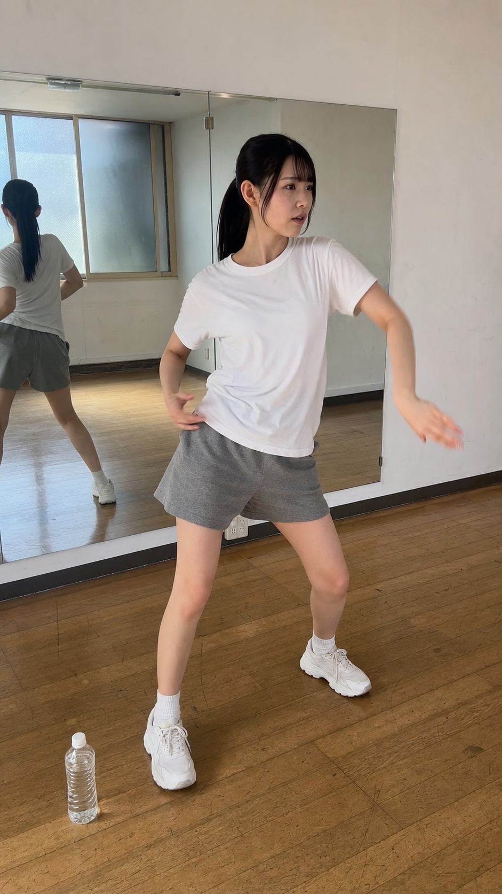
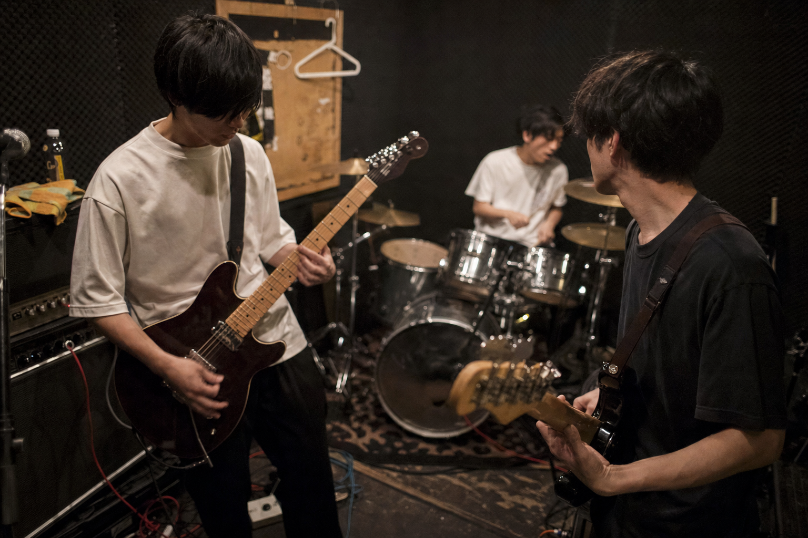
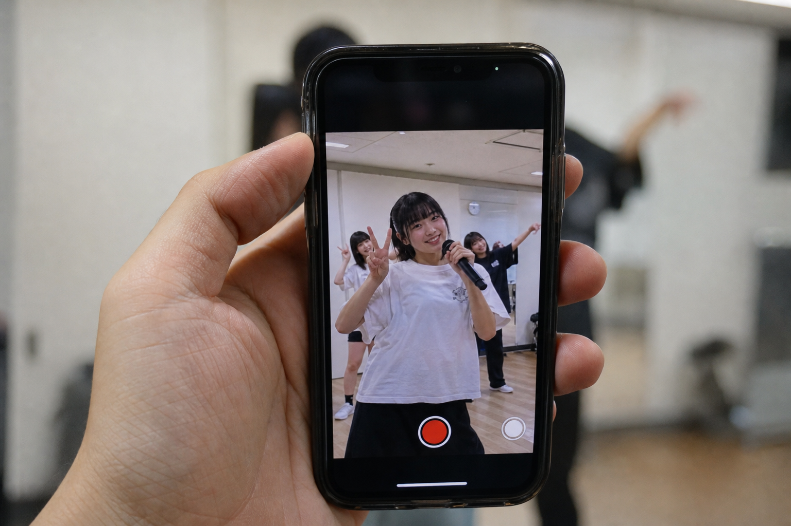

毎日のリハーサル、ネタ合わせ、ひとりで繰り返すダンス。誰にも見られず、お金にもならず、ただ過ぎていく時間。でも、それはあなたが確かに積み上げている「一次資料」です。
研究者が日々の観測を淡々と記録するように、練習の一瞬を記録として残す。無名の今だからこそ、その記録は後から価値を持ちます。

観測No.014 — 個人練 / スタジオ / 自然光1日1日の記録は、その時は小さな一片です。けれど積み重なった記録は、あとから振り返れない「無名時代の一次資料」になる。あなたが有名になるほど、その最初期の記録の希少性は上がっていきます。
※ たとえば、結成11年目にブレイクしたグループがいる。
もし下積み時代の練習が一点物で残っていたら——。
むずかしい編集も、特別な機材もいりません。研究の観測手順のように、決まった順で淡々と進めるだけ。撮るのは、いつもの練習です。
実際の操作画面を、記録帳に綴じた観測票として1枚ずつ描き起こしました。日時と価格を書き入れ、当日撮って、公開前に確かめて配る——順に追えます。
これからやる練習の時間枠を先に出す。日時・価格・販売枠数（＝配布する本数）・1本の長さを、あなたが決めます。まだ撮ってもいない未来の時間を、記録の予定として登録する感覚です。
ファンが時間枠を購入します。中身はまだ撮影すらされていないので、届くまで分からない。「あなたのこの日の練習」という予約に、ファンは価値を感じて申し込みます。
撮影日、いつもの練習をスマホで撮るだけ。編集は不要です。三脚に立てかけて回しておくだけでも構いません。特別なことをする必要はありません。
撮った映像をアップすると、自動で約10秒の短いセグメントに分割されます。手作業でカットする必要はありません。ここまでがあなたの作業のほぼすべてです。
配布される前に、あなた自身が中身を確認できます。本当にまずい「事故」の瞬間だけを非公開にできる。該当する購入者には自動で返金されるので、安心です。
承認されたセグメントが、購入者へランダムかつ一意に割り当てられます。同じ断片は2つとありません。各人が受け取るのは、世界に1つの記録です。
ファンは自分だけの一片を受け取り、手元に保有します。日付と番号で管理された、真正性の担保された記録。あなたの練習の一瞬が、誰かの宝物になります。
いつものリハ、ネタ合わせ、ひとり練習。カメラを回しておくだけで、それが記録になります。

観測No.021 — バンド / リハ
観測No.022 — 記録中 / スマホ誇張せず、順を追って説明します。
これまで捨てていた練習・裏側の時間が、そのまま新しい収益源になります。初期費用は0円、手数料は5%から。在庫も発送もなく、ノーリスクで始められます。撮った練習を出すだけです。
「自分がこの人を早くから見ていた」「育つ前の記録を持っている」——ファンはその物語ごと買います。無名の今の記録は、あとからは決して手に入りません。だからこそ価値がつきます。
ライブ配信と違い、撮影してからアップロードする仕組みです。公開前に中身を確認できるので、まずい瞬間が世に出ることはありません。慎重に活動したい人ほど、安心して使えます。
ファンは既に「一点物・素のコンテンツ・本人とのつながり」に、実際にお金を払っています。Lapsell の「素の一点物」も、同じ行動原理で買われます。以下は、その根拠となる観測データです。
→ つまり「素の一片にお金を払う」行動は、すでに広く根づいている。
始めるのにお金はかかりません。売れたときに、手数料をいただくだけ。だから、まずは1枠だけ試すことができます。
※ 出品も、掲載も、記録の保管も、それ自体には費用はかかりません。
誇張やギャンブル的な煽りとは無縁の設計です。記録として、誠実に扱うための仕組みを用意しています。
大丈夫です。スマホで練習を撮るだけで、あとは自動で短いセグメントに分割されます。編集は不要です。三脚に立てかけて回しておくだけでも記録になります。
もちろんです。むしろ無名の今の記録こそ、あとからは手に入らない一次資料になります。まずは1枠、少ない販売数から試せます。売れたときだけ手数料がかかります。
撮影後にアップロードし、公開前にあなた自身が中身を確認できます。まずい瞬間は非公開にでき、その購入者には自動で返金されます。ライブ配信のような事故は起きません。
始めるのに初期費用・月額費用はかかりません。出品も掲載も無料です。売れたときに販売手数料5%〜をいただくだけです。在庫も発送もありません。
あなたの練習映像から切り出された、約10秒の「世界に1つの動く記録」です。日付と番号で管理され、同じものは他の誰も持っていません。動くチェキのようなものだと考えてください。
派手なことはできなくても、毎日の記録を続けることには意味があります。その一片が、あなたの資産になる。まずは1枠、出品してみてください。